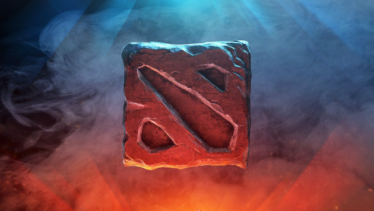
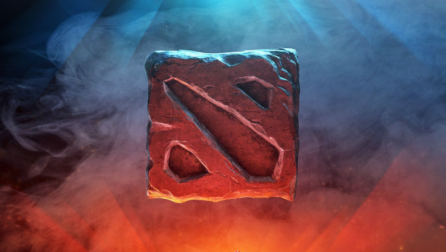

Dota 2
Dota 2 — многопользовательская командная компьютерная игра в жанре MOBA, разработанная и изданная корпорацией Valve. Игра является продолжением DotA — пользовательской карты-модификации для игры Warcraft III: Reign of Chaos и дополнения к ней Warcraft III: The Frozen Throne. Игра изображает сражение на карте особого вида; в каждом матче участвуют две команды по пять игроков, управляющих «героями» — персонажами с различными наборами способностей. Для победы в матче команда должна уничтожить особый объект-«крепость», принадлежащий вражеской стороне, и защитить от уничтожения собственную «крепость». Dota 2 работает по модели free-to-play с элементами микроплатежей.
Разработка игры началась в 2009 году, когда компания Valve приняла на работу основного разработчика DotA — IceFrog, а летом 2010 года подала заявку на регистрацию этой торговой марки. 13 октября 2010 года на игровом портале Game Informer игра была анонсирована к выходу в 2011 году. 15 августа 2011 года в официальном блоге был опубликован трейлер к игре. Dota 2 вышла в июле 2013 года после того, как два года находилась в стадии бета-тестирования.
 


есть огромная семья
Я узнал , что мать - свинья
И отца нет у меня
И сестры и брата нет
А мой отчим - это Трент
Я узнал свои болезни
Там есть все и даже дважды
Но зато теперь уверен
Что корона мне не страшен
Я узнал когда придет
Час расплаты за грехи
Мне кричал все это войс
Мальчик , лет так десяти
Он сказал , что мне не жить
В день когда произойдет
Будет мне уж очень больно
Вероятно есть вопрос:
От чего такая злость
Но ответ довольно прост
Не отжал я аванпост
Не контролил руны я
Не запулил танго два
Не дал вард
И в мид ТП
Слил ФБ
Не взял фп
Не отдал ему пуджа
В этом вся есть Dota 2.
Dota 2
настільки вражаюча гра, що про неї навіть складабть вірші. А також я грав у неї, коли в мене був незроблений проект(